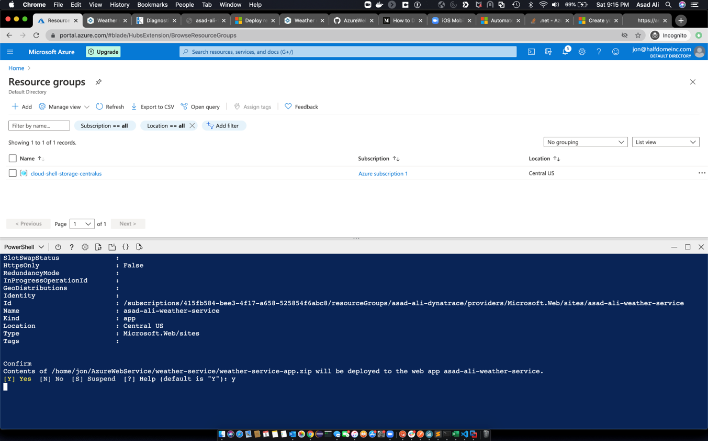

This repository contains labs for the Azure Hands-On Session.
Prerequisites
- Azure Portal Account access. Use ANY of the following:
- Access via Microsoft Visual Studio Subscription
- Access via Sales-Engineering/APAC Subscription (via GOTC)
- Access from Free Trial
What You'll Learn
- How to deploy Web App on Azure
- Learn how to use deploy Dynatrace with Azure with Site Extensions
- How to deploy Azure Function
Clone Repo to Azure Cloud shell
Login to Azure Portal with your designated email.
Click on Cloud Shell icon on the top navigation bar.

Within the Cloudshell terminal, type in the below.
git clone https://github.com/Nodnarboen/AzureWebService.git
cd AzureWebService/weather-service
The above command will download the git from the repo into your Cloud bastion host. This is setup based on your Storage Account location.
Deploy Weather Service WebApp
Negative :Depending on your cloud shell location, you may change the $location value within the publish.p1 to fit your region. Full list of regions are here
$resourceGroupName=$args[0]
$webappname=$args[1]
$location="Australia East"
Replace the firstname-lastname from the below command and adapt that to your own.
./publish.ps1 firstname-lastname-dynatrace firstname-lastname-weather-service
Example
./publish.ps1 brandon-neo-dynatrace brandon-neo-weather-service
Enter Y when prompted to deploy the content of the Weather Service app (AzureWebService/weather-service/weather-service-app.zip)

Verify Resource Group creation
Now that your app has been deployed, verify that the resource group has been deployed as well.

Append /weather/current/Linz to your URL from your firstname-lastname-weather-service App Service
Example
https://brandon-neo-weather-service.azurewebsites.net/weather/current/Linz
You should get a page reflecting JSON results.

Deploy Weather Express WebApp
Navigate to weather-express folder with cd ../weather-express command
$resourceGroupName=$args[0]
$webappname=$args[1]
$location="Australia East"
Replace the firstname-lastname from the below command and adapt that to your own.
./publish.ps1 firstname-lastname-dynatrace firstname-lastname-weather-express
Example
./publish.ps1 brandon-neo-dynatrace brandon-neo-weather-express
Enter Y when prompted to deploy the content of the Weather Service app (AzureWebService/weather-service/weather-express-app.zip)
Verify Resource Group creation
Similar to the Weather Service App verfication, check on the Weather Express App App Service URL. Is it working?
Debugging
Within the Weather Express App Service, go to the Advanced Tools under Deployment Tools.
Within the Kudu page, dropdown Debug Console to CMD and go to site/LogFiles/Application
Edit logging-errors.txt and you can find the error message with the problem

Resolution and Verification
Go to App Service Editor (Preview) and under WWWROOT/config/main.js, resolve the following based on the GIF
- Removing "-" at the last line
- Renaming your Uri to your firstname-lastname-weather-service.azurewebsites.net/weather

Once you have resolved the issue, you should be able to access your Weather Express Portal
Leveraging Site Extensions
Deployment the OneAgents cross both Weather Express App and Weather Service Apps

Full Documentation here
Creating Function App
Create a Azure App based on the following:
- Create a resource
- Search for Function App
- Click on Create
- Chooce your Resource Group - Firstname-Lastname-dynatrace (eg. Brandon-Neo-dynatrace )
- Name your Function App - Firstname-Lastname-dynatrace-function (eg. Brandon-Neo-dynatrace-function )
- Runtime Stack - .NET Core
- Version - 3.1
- Region - Your Choosen Region (eg. Australia East)
- Next
- Operating Systems - Windows
- Plan type - App service plan
- Windows Plan - Firstname-Lastname-weather-express (eg. Brandon-Neo-weather-express )
- Next
- No to AppInsights
- Create
- Once created, Go to Resource

Adding A Function
Create a Azure Function based on the following:
- Select Function on the left Nav, Click on + Add
- Choose HTTP trigger
- Authorization type - Anonymous
- Code + Test
- Test/Run, Run

Leveraging Site Extensions
Deploy and instrument the Function App with Site Extension

We hope you enjoyed this lab and found it useful. We would love your feedback!